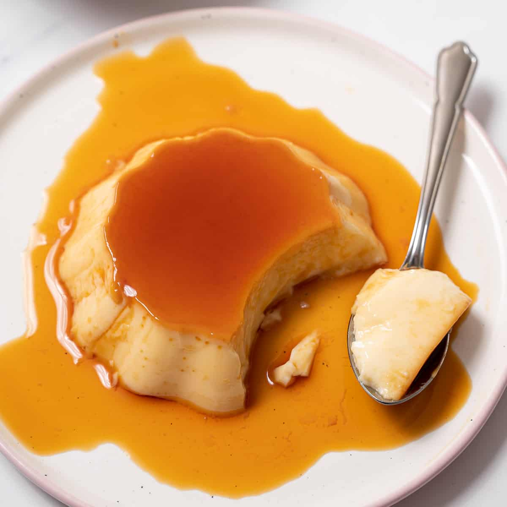

Home
Spanish Flan

Original recipe submitted to ASOTO to Allrecipes
Description
This flan is delicious and a family favorite — it's easy to make and everyone will love it!
Ingredients
- 1 cup white sugar
- 3 large eggs
- 1 (14 ounce) can sweetened condensed milk
- 1 (12fluid ounce) can evaporated milk
- 1 (12 fluid ounce) can evaporated milk
- 1 tablespoon vanilla extract
Instructions
- Preheat the oven to 350 degrees F (175 degrees C).
- Melt sugar in a medium saucepan over medium-low heat until liquefied and golden in color. Carefully pour hot syrup into a deep 9-inch round glass baking dish, turning the dish to evenly coat the bottom; set aside.
- Beat eggs in a large bowl. Add condensed milk, evaporated milk, and vanilla; beat until smooth. Pour egg mixture on top of caramel in the baking dish; place in a deep roasting pan. Carefully pour in enough hot water to come 1 inch up the sides of the dish.
- Bake in the preheated oven until just set with a slight jiggle in the center, about 1 hour, checking after 55 minutes. Keep in mind the flan will continue to set as it cools. Remove from the oven and carefully transfer baking dish to a wire rack; cool to room temperature, then cover with plastic wrap to prevent a skin forming. Refrigerate for 3 hours or up to 3 days.
- To serve, run a knife around the edges of the dish; carefully invert onto a rimmed serving plate and let caramel sauce flow over flan.